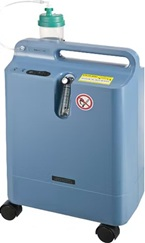
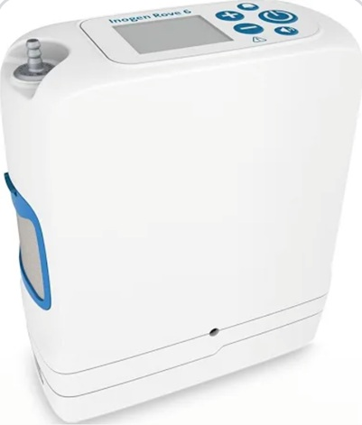

Oxygen Concentrators
An oxygen concentrator is a medical device that takes in regular room air and filters out nitrogen to deliver a steady supply of oxygen-enriched air for breathing. It provides oxygen continuously, as long as it has power, without the need for refilling like traditional oxygen tanks.
Private Online Sessions

Continues O2 Concentrator NON-portyable. These concentrators are in grand demand in nursing homes and rehabilitation centers where they don't have liquid oxygen only O2 tanks, therefore no wall O2 instalations. These concentrators can provide up to 8 L continues O2

At demand O2 Cocentrator Portable
These concentrators are the size of a shoe box and about 2KG.Providing from 1 to 6 pulsating O2 dosages by demand, which directly will make more or less use of its battery
 © 2026 Julio Bautista – International Respiratory Coaching
© 2026 Julio Bautista – International Respiratory Coaching